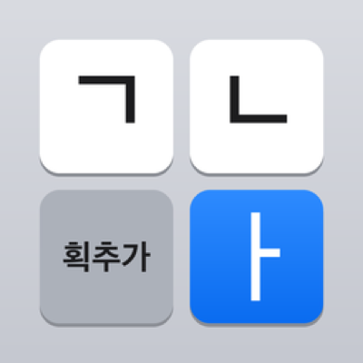
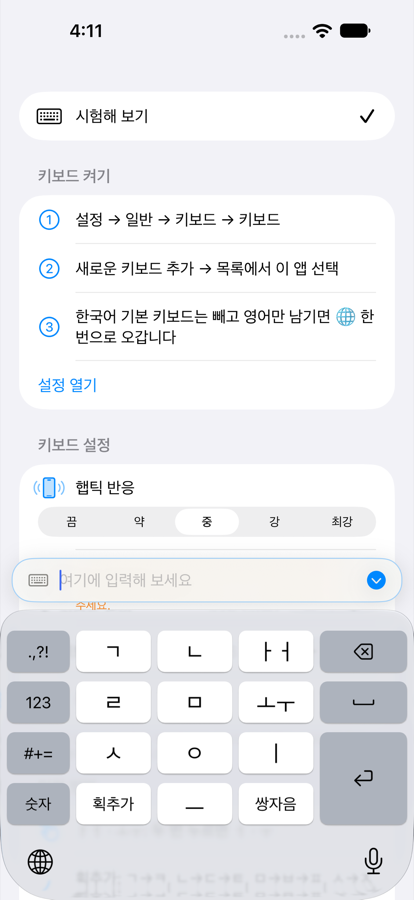
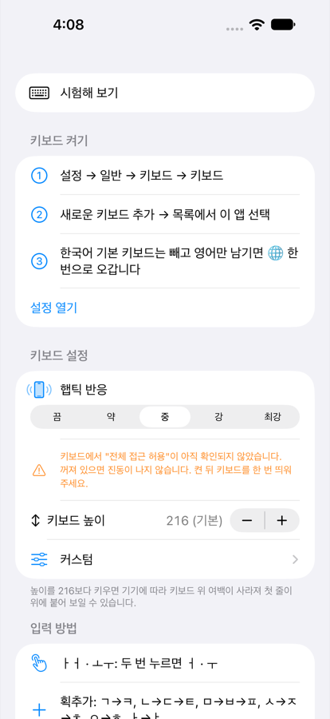
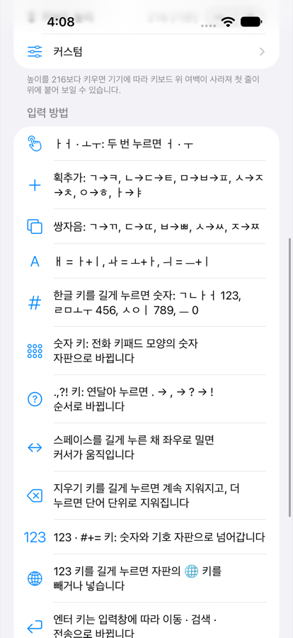

과일키보드
획만 더하면 되는
한 손 한글 iPhone 키보드.



큰 키 4×4
ㄱ ㄴ ㄹ ㅁ ㅅ ㅇ와 ㅏ ㅓ ㅗ ㅜ 같은 기본 자모만 큼직하게 둬서 한 손 엄지로 빠르게 칩니다.
획만 더하면 끝
ㄱ→ㅋ, ㄴ→ㄷ→ㅌ, ㅁ→ㅂ→ㅍ, ㅅ→ㅈ→ㅊ, ㅇ→ㅎ. 같은 키를 이어 눌러 획을 더합니다. 쌍자음 키로 ㄲ ㄸ ㅃ ㅆ ㅉ은 바로 입력합니다.
내 손에 맞게
햅틱 강도, 키보드 높이, 숫자 자판 0 옆 버튼의 기호를 앱에서 직접 바꿉니다.
숫자·기호·커서
숫자 자판, 기호 순환, 스페이스를 밀어 커서 이동, 지우기를 길게 눌러 단어 단위 삭제. 앱 안에서 바로 쳐 보며 연습할 수 있습니다.
입력 내용은 기기 밖으로 나가지 않습니다
인터넷에 연결하지 않고, 광고와 추적 도구가 없습니다. '전체 접근 허용'은 키 진동에만 쓰이며 꺼도 입력은 그대로 됩니다.
이렇게 켜세요
설정 → 일반 → 키보드 → 키보드 → 새로운 키보드 추가 → 과일키보드. 진동을 쓰려면 '전체 접근 허용'을 켭니다.